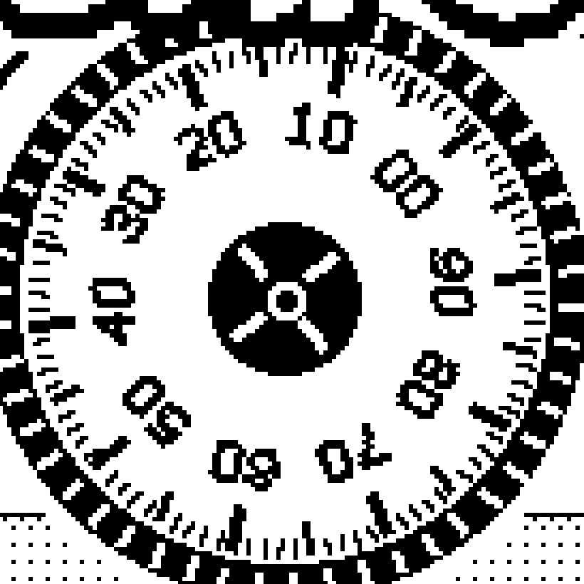
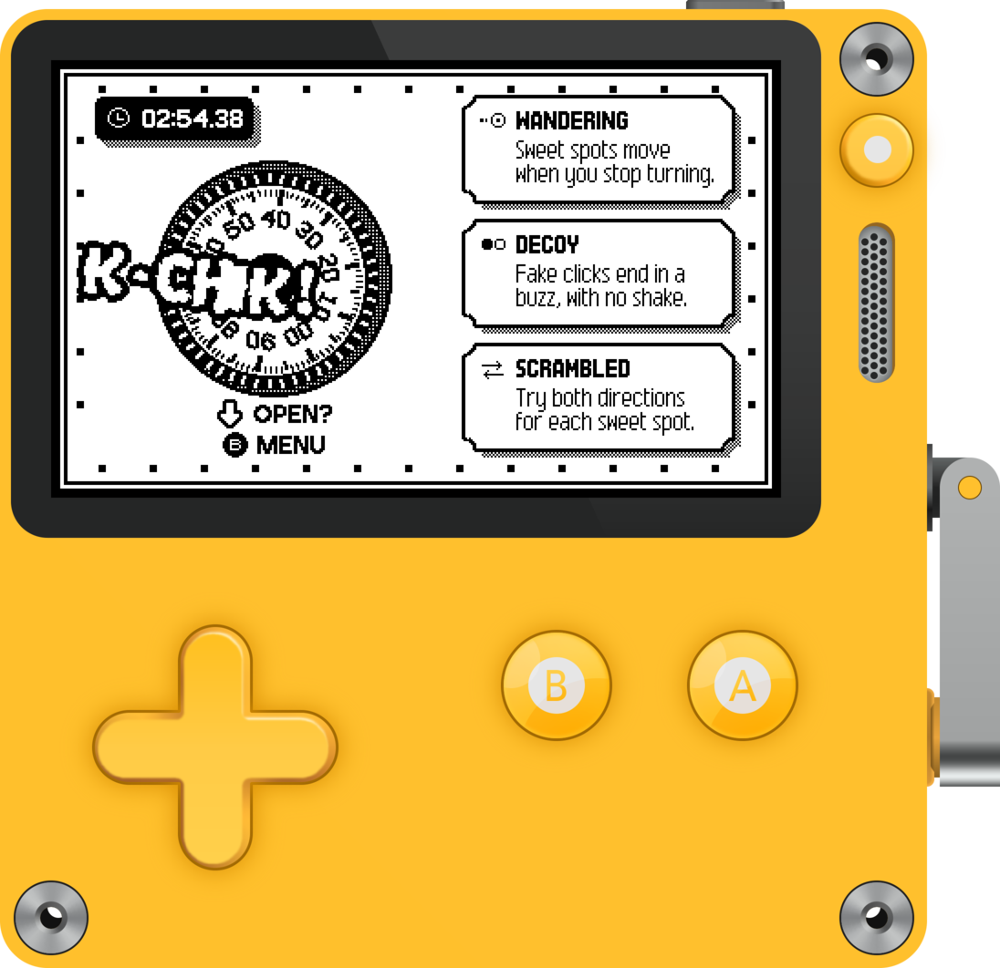

THE CRANK IS THE DIAL.
K-CHK!
A SAFE-CRACKING GAME FOR PLAYDATE.
TOO FAST? START OVER.
LISTEN FOR THE CLICK.
13 MODIFIERS. 3 DEALT PER RUN.
KEYPAD
NITRO
GEAR MESH
BLACKOUT

FREE FOR PLAYDATE
vincentconsole.itch.io/safu